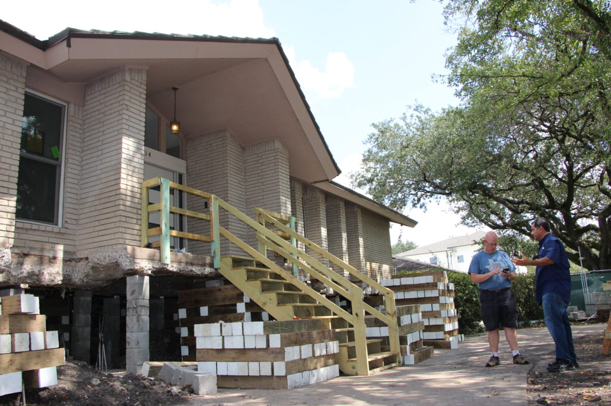
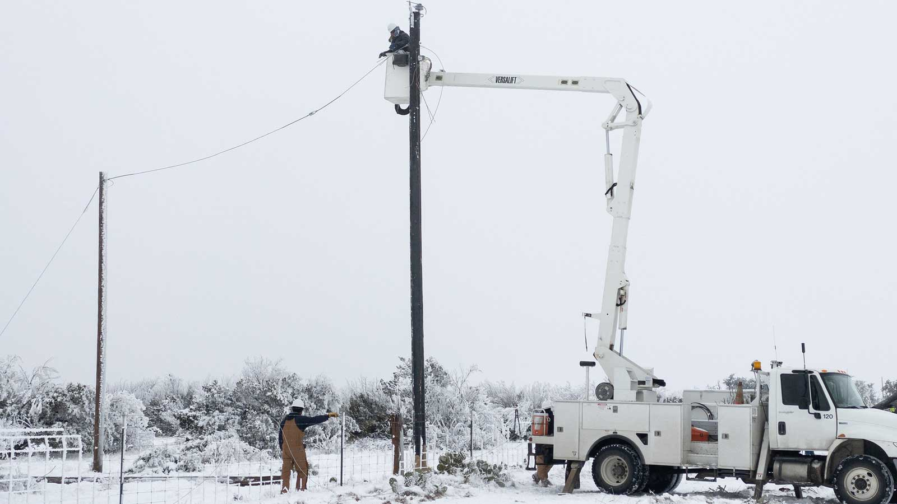

55Welcome to CEVE 421/521!
Lecture
Mon., Jan. 8
Meet the professor

- Assistant Professor of Civil and Environmental Engineering
- dossgollin-lab.github.io
- jdossgollin@rice.edu
- Office hours by apopintment (or come chat after class)
Your turn
- Name / what you prefer to be called
- Year
- Major / research topic / field of study
- One thing you want to learn from this class
What is climate risk management?
Today
What is climate risk management?
Example decisions
About the course
Software tools
Logistics
Climate
The slowly varying aspects of the atmosphere–hydrosphere–land surface system.
Climate Risk

Climate Risk
Your turn!
What climate risks have you heard of?
Climate Risk Management
Your turn!
What climate risk management strategies have you heard of?
- Financial instruments (e.g., insurance)
- Floodproof buildings
- Zoning codes
- Major infrastructure
- Improve emergency planning
Example decisions
Today
What is climate risk management?
Example decisions
About the course
Software tools
Logistics
Update land use / zoning regulations?
: Satija et al. (2016)

How to size stormwater infrastructure?
: Doss-Gollin

How high to elevate a house for proactive flood protection?
: Allison Lee / Houston Public Media

Require weatherization of privately owned electricity infrastructure?
: Jonathan Cutrer / Flickr.

About the course
Today
What is climate risk management?
Example decisions
About the course
Software tools
Logistics
Course goals
Climate risk management is a very broad field. We will:
- Survey how it is implemented in different fields
- Develop a deep understanding of how to assess proposed climate risk strategies
- Apply these methods to a real-world problem
The syllabus is online!
- Course website: https://ceve-421-521.github.io/
- Syllabus: https://ceve-421-521.github.io/syllabus/
- Read it! (and confirm on Canvas)
- Questions? Ask now or later!
Course organization
Module 1: introduction
- Introduction
- Science of climate hazard
- Vulnerability, exposure, and impacts
- Systems
Course organization
Module 2: decision analysis
- Cost-benefit analysis
- Scenario analysis
- Policy search and optimization
- Multiobjective policy search
- Sequential decision problems
Course organization
Module 3: thinking critically
- Robustness
- Deep uncertainty
- Equity and justice
- Financial and systemic risks
- Reflections
Class structure
Mondays
- Lecture
- Take notes and ask questions
- Slides posted by Sunday night (or earlier, though minor changes Monday morning possible)
- To print, follow the official Quarto instructions)
Class structure
Wednesdays
- Short and easy reading quiz to start
- Student-led reading discussion
- Do the reading and participate in the discussion (including to ask questions!)
Class structure
Fridays
- Lab.
- Make significant progress in class.
- Due at the start of next lab.
Acommodations
If you have a documented disability, scheduling conflicts, or otherwise need accommodations, please let me know as soon as possible
Viruses are circulating and everyone’s immune system is different. If you need others to wear a mask to protect you, please let me know – no health disclosures needed.
Academic integrity
- AI/ML resource policy in the syllabus
- Rice Honor Code
- See some examples from Vivek Srikrishnan (Cornell) and Tony Wong (RIT)
- If in doubt, ask!
A community of learning
- We all benefit from a diverse, safe, welcoming, and inclusive environment
- Analysis is not value neutral – we will discuss how to think critically about the assumptions and values underlying our work, and their implications
- Assume good faith of others and engage in good faith yourself
Pre-requisites
We will use quantitative language and ideas to frame ideas. The only formal pre-requisite is a first course in probability / statistics
Exposure to some of the following will be helpful:
- Engineering economics
- Programming
- Climate science
- Engineering design
Important
If you’re not sure whether you should take the class, come talk to me!
Grading
Weekly readinhg quizzes (10%)
- Designed to be easy if you do the reading
- 5 minutes at the start of discussion days
- Will drop the lowest two
Grading
Labs (10%)
- Graded for completion only:
- 3: complete
- 2: missing important parts
- 1: barely tried
- 0: nothing
- Solutions will be posted. You are responsible for going through solutions.
Grading
Tests
- In-class exams
- I’ll try to make them straightforward!
Grading
Project (30%)
- Labs will build on each other to create a final project
- Your task is to add something new to the project
- Present during final exam block
Grading
Reading discussion (10%, 521 only)
521 students will lead one reading discussion. Contact me to schedule!
Reading notes (10%)
- Everyone will take notes once during the semester on a reading discussion.
- I will share sign-up info.
- Groups allowed as needed.
Software tools
Today
What is climate risk management?
Example decisions
About the course
Software tools
Logistics
Tool overview
In this class, we will use
- Julia
- GitHub
- Quarto
- VS Code (suggested)
Why Julia?
- Syntax
- Readable to computers and humans
- Closely parallels math notation
- Designed for numerical and scientific computing
- Fast!
- “Two language problem”
- All you need is Julia
- Open source
Julia example
A (naive) implementation of the Fibonacci sequence:
GitHub
- You need a GitHub account
- Code is stored in “repositories”
clonea repository to your computer- Make changes and
committhem pushyour changes to GitHub- Using GitHub classroom, instructors can view your code
Quarto
Quarto is a tool that allows you to combine text and code and create many types of output
- This website is made with Quarto
- You will use Quarto to create reports for labs
- Everything in one place
- No running code, save a figure to
Downloads, copy into Word, then update your code and try to remember where to paste it
- Reproducible
VS Code
- VS Code is a text editor
- If you are an advanced user of another text editor, you can use that instead, but I recommend VS Code
- VS Code can work as a Julia IDE
Resources
See the resources page for links to tutorials and other resources!
Logistics
Today
What is climate risk management?
Example decisions
About the course
Software tools
Logistics
Reading
For Wednesday:
- Three news articles on flood risk management
- Come prepared for a discussion on Wednesday
- Reading quiz should be very easy if you do the reading
Lab 1
- Generally no advance preparation needed
- For our first lab, we will be installing required software for the course.
- Please start working on this lab as soon as possible so that we can use Friday’s lab session to troubleshoot any issues and review the material.
References
Satija, N., Collier, K., & Shaw, A. (2016, December 7). Boomtown, flood town. ProPublica: Hell and High Water. Retrieved from https://projects.propublica.org/houston-cypress/